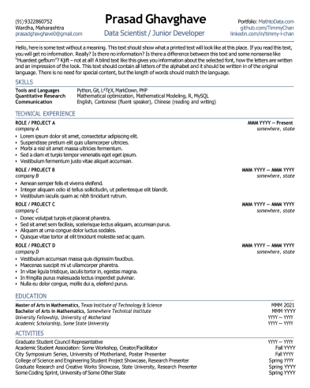

<!DOCTYPE html>
<html lang="en">
<head>
  <meta charset="UTF-8" />
  <meta name="viewport" content="width=device-width, initial-scale=1.0, viewport-fit=cover"/>
  <meta name="description" content="Portfolio of Prasad S. Ghavghave — Junior Linux System Administrator, DevOps & AI Researcher. Red Hat certified (RH124, RH294, DO180), IEEE author of 6 publications, RHEL 9, Ansible, Docker, deep learning (CNN, YOLOv8)." />
  <meta property="og:type" content="website" />
  <meta property="og:title" content="Prasad S. Ghavghave | Linux Admin & AI Researcher" />
  <meta property="og:description" content="Junior Linux System Administrator (RHEL 9, Ansible, Docker) and IEEE-published AI researcher with 6+ papers on deep learning and computer vision." />
  <meta property="og:image" content="assets/stills/home.jpg" />
  <meta property="og:url" content="https://prasad111-dev.github.io/Portfolio/" />
  <meta name="theme-color" content="#0b0d12" />
  <link rel="icon" type="image/png" href="abc/favicon.png" />
  <link rel="apple-touch-icon" href="abc/apple-touch-icon.png" />
  <link rel="preconnect" href="https://fonts.googleapis.com" />
  <link rel="preconnect" href="https://fonts.gstatic.com" crossorigin />
  <link rel="preconnect" href="https://cdnjs.cloudflare.com" />
  <title>Prasad S. Ghavghave — the world of Linux & AI</title>
  <script async src="https://www.googletagmanager.com/gtag/js?id=G-RZ5H5JW9MN"></script>
  <script>
    window.dataLayer = window.dataLayer || [];
    function gtag(){dataLayer.push(arguments);}
    gtag('js', new Date());
    gtag('config', 'G-RZ5H5JW9MN');
  </script>
  <link href="https://fonts.googleapis.com/css2?family=Outfit:wght@300;400;500;600;700;800;900&family=JetBrains+Mono:wght@400;500;600;700;800&display=swap" rel="stylesheet"/>
  <style>
    :root, .sw-root {
      --sw-bg: #0b0d12;
      --sw-ink: #f4f1ea;
      --sw-ink-soft: #aab2c1;
      --sw-accent: #E879F9;
      --sw-font-display: 'Outfit', ui-rounded, 'Segoe UI', system-ui, sans-serif;
      --sw-font-body: 'Outfit', -apple-system, BlinkMacSystemFont, 'Segoe UI', system-ui, sans-serif;
      --sw-font-mono: 'JetBrains Mono', ui-monospace, Menlo, monospace;
    }
    html, body { margin: 0; background: #0b0d12; }
    ::selection { background: rgba(232,121,249,0.35); color: #fff; }

    /* ---- copy typography ---- */
    .sw-copy__num { font-family: var(--sw-font-mono); font-size: .74rem; letter-spacing: .12em; color: var(--sw-ink-soft); }
    .sw-copy__eyebrow { font-family: var(--sw-font-display); font-weight: 700; font-size: .8rem; letter-spacing: .16em; text-transform: uppercase; }
    .sw-copy__title { text-shadow: 0 2px 26px rgba(0,0,0,0.55); }
    .sw-copy__body { color: color-mix(in srgb, var(--sw-ink) 84%, var(--sw-ink-soft)); text-shadow: 0 1px 16px rgba(0,0,0,0.65); }
    .sw-copylayer::before { width: min(56vw, 760px); background: linear-gradient(90deg, #0b0d12 0%, rgba(11,13,18,0.7) 38%, rgba(11,13,18,0.2) 64%, transparent 100%); }
    .sw-route::before { opacity: .4; }
    .sw-nav { background: rgba(11,13,18,0.4); backdrop-filter: blur(12px); border-color: rgba(255,255,255,0.12); }
    .sw-nav__item.is-active { color: #0b0d12; }
    .sw-route__label { background: rgba(11,13,18,0.78); color: var(--sw-ink); border-color: rgba(255,255,255,0.12); }
    .sw-brand__mark { border-radius: 999px; width: 26px; height: 26px; }
    .sw-scene__still { transition: filter .6s linear; }

    /* ---- per-scene accent tint overlay (colour grade feel) ---- */
    .sw-scene::after {
      content: ""; position: absolute; inset: 0; z-index: 2; pointer-events: none;
      background:
        linear-gradient(180deg, rgba(0,0,0,0.28) 0%, transparent 34%, rgba(0,0,0,0.18) 100%),
        radial-gradient(120% 90% at 50% 50%, transparent 40%, rgba(0,0,0,0.42) 100%),
        color-mix(in srgb, var(--sw-accent) 16%, transparent);
      mix-blend-mode: normal;
    }
    .sw-scene.has-clip .sw-scene__still { opacity: 0; }

    /* ---- cinematic matte bars ---- */
    .cine-matte { position: fixed; left: 0; right: 0; z-index: 15; pointer-events: none;
      height: 0; opacity: 0; background: #000; transition: opacity .5s ease; will-change: height, opacity; }
    .cine-matte--top { top: 0; }
    .cine-matte--bot { bottom: 0; }

    /* ---- film grain ---- */
    .cine-grain {
      position: fixed; inset: -6%; z-index: 14; pointer-events: none; opacity: .07;
      background-image: url("data:image/svg+xml;utf8,<svg xmlns='http://www.w3.org/2000/svg' width='220' height='220'><filter id='n'><feTurbulence type='fractalNoise' baseFrequency='0.9' numOctaves='2' stitchTiles='stitch'/></filter><rect width='220' height='220' filter='url(%23n)' opacity='0.9'/></svg>");
      animation: sw-grain 0.55s steps(3) infinite; will-change: transform;
    }
    @keyframes sw-grain {
      0% { transform: translate(0,0); } 25% { transform: translate(-1.4%,0.9%); }
      50% { transform: translate(1.1%,-1.2%); } 75% { transform: translate(-0.8%,-0.6%); }
      100% { transform: translate(0.9%,1.1%); }
    }

    /* ---- light leak sweep ---- */
    .cine-leak {
      position: fixed; inset: 0; z-index: 13; pointer-events: none; opacity: .5;
      background: linear-gradient(115deg, transparent 42%,
        color-mix(in srgb, var(--sw-accent) 10%, transparent) 50%,
        transparent 58%);
      background-size: 220% 220%; background-position: 130% 40%;
      animation: sw-leak 9s ease-in-out infinite; mix-blend-mode: screen; will-change: background-position;
    }
    @keyframes sw-leak {
      0%, 100% { background-position: 130% 40%; }
      50% { background-position: -30% 60%; }
    }

    /* ---- vignette ---- */
    .cine-vignette {
      position: fixed; inset: 0; z-index: 12; pointer-events: none;
      background: radial-gradient(120% 100% at 50% 50%, transparent 55%, rgba(0,0,0,0.55) 100%);
    }

    /* ---- featured frames ---- */
    .sw-feature { position: absolute; z-index: 3; opacity: 0; transition: opacity .5s ease;
      filter: drop-shadow(0 24px 48px rgba(0,0,0,0.55)); will-change: opacity, transform; }
    .sw-scene.is-home .sw-feature--portrait { opacity: 1; }
    .sw-scene.is-projects .sw-feature--shot { opacity: 1; }

    .sw-feature--portrait {
      right: clamp(20px, 6vw, 90px); top: 50%; transform: translateY(-46%);
      width: clamp(190px, 21vw, 300px); aspect-ratio: 1;
      border-radius: 26px; overflow: hidden;
      border: 1px solid rgba(255,255,255,0.22);
      box-shadow: 0 0 0 1px color-mix(in srgb, var(--sw-accent) 45%, transparent),
                  0 0 60px -12px color-mix(in srgb, var(--sw-accent) 55%, transparent);
    }
    .sw-feature--portrait img { width: 100%; height: 100%; object-fit: cover; }
    .sw-feature--portrait::after {
      content: ""; position: absolute; inset: 0;
      background: linear-gradient(180deg, transparent 52%, rgba(0,0,0,0.78) 100%);
    }
    .sw-feature__caption {
      position: absolute; left: 16px; right: 16px; bottom: 14px; z-index: 2;
      font-family: var(--sw-font-display); color: #fff;
    }
    .sw-feature__caption b { display: block; font-size: .95rem; letter-spacing: .01em; }
    .sw-feature__caption span { font-size: .7rem; opacity: .82; letter-spacing: .08em; text-transform: uppercase; }

    .sw-feature--shot {
      right: clamp(18px, 5vw, 84px); top: 50%; transform: translateY(-50%);
      width: min(clamp(230px, 26vw, 380px), 40vh);
      border-radius: 14px; overflow: hidden;
      border: 1px solid rgba(255,255,255,0.2);
      box-shadow: 0 30px 70px -18px rgba(0,0,0,0.7),
                  0 0 0 1px color-mix(in srgb, var(--sw-accent) 40%, transparent);
      background: #0e1017;
    }
    .sw-feature--shot .sw-feature__bar {
      display: flex; gap: 6px; align-items: center; padding: 10px 12px;
      background: rgba(255,255,255,0.06);
    }
    .sw-feature--shot .sw-feature__bar i { width: 10px; height: 10px; border-radius: 50%; background: rgba(255,255,255,0.22); }
    .sw-feature--shot .sw-feature__bar i:first-child { background: #ff5f57; }
    .sw-feature--shot .sw-feature__bar i:nth-child(2) { background: #febc2e; }
    .sw-feature--shot .sw-feature__bar i:nth-child(3) { background: #28c840; }
    .sw-feature--shot img { display: block; width: 100%; height: auto; }

    @media (max-width: 860px) {
      .sw-copylayer::before { width: 100%; height: 64%; top: auto; bottom: 0; background: linear-gradient(0deg, #0b0d12 8%, rgba(11,13,18,0.62) 50%, transparent 100%); }
      .sw-feature--portrait {
        right: auto; left: 50%; top: clamp(70px, 12vh, 110px); transform: translateX(-50%);
        width: clamp(120px, 30vw, 160px); border-radius: 20px;
      }
      .sw-feature--shot { display: none; }
    }
    @media (prefers-reduced-motion: reduce) {
      .cine-grain, .cine-leak { animation: none; }
      .sw-scene__still { transition: none; }
    }
  </style>
</head>
<body>
  <div id="top"></div>
  <div id="world"></div>

  <div class="cine-vignette" aria-hidden="true"></div>
  <div class="cine-leak" aria-hidden="true"></div>
  <div class="cine-grain" aria-hidden="true"></div>
  <div class="cine-matte cine-matte--top" id="matteTop" aria-hidden="true"></div>
  <div class="cine-matte cine-matte--bot" id="matteBot" aria-hidden="true"></div>

  <script src="scrub-engine.js"></script>
  <script>
    mountScrollWorld(document.getElementById('world'), {
      brand: { name: 'prasad.dev', href: '#top' },
      cta: { label: 'Download CV', href: 'Prasad_Ghavghave_Resume.pdf' },
      hint: 'scroll to fly in',
      diveScroll: 1.15,
      connScroll: 0.8,
      crossfade: 0.14,
      nav: true,
      atmosphere: true,
      sections: [
        {
          id: 'home', label: 'Home',
          still: 'assets/stills/home.jpg',
          accent: '#E879F9',
          scroll: 1.4,
          eyebrow: 'Prasad S. Ghavghave',
          title: 'Junior Linux System Administrator | DevOps | AI Researcher',
          body: 'B.Tech graduate in AI & Machine Learning (DMIHER University), IEEE author of 6 publications, and Red Hat Academy certified (RH124, RH294, DO180). Hands-on with RHEL 9 server management, Ansible automation, Docker, SELinux and shell scripting.',
          tags: ['Wardha, India', 'IEEE Author', 'Red Hat Certified', 'RHEL 9'],
          cta: { primary: { label: 'Download CV', href: 'Prasad_Ghavghave_Resume.pdf' },
                 secondary: { label: "Let's talk", href: 'mailto:prasadghavghave0@gmail.com' } },
        },
        {
          id: 'about', label: 'About',
          still: 'assets/stills/about.jpg',
          accent: '#22D3EE',
          eyebrow: 'About me',
          title: 'Sysadmin by day, researcher by practice.',
          body: 'Red Hat Academy certified (RH124, RH294, DO180) with a strong deep-learning research background. I keep production Linux servers secure and automated, and publish applied AI at IEEE Xplore.',
          tags: ['B.Tech AI & ML', '6 IEEE Publications', 'Ansible', 'Docker'],
        },
        {
          id: 'journey', label: 'Journey',
          still: 'assets/stills/journey.jpg',
          accent: '#8B5CF6',
          scroll: 1.3,
          linger: 0.25,
          eyebrow: 'Experience & education',
          title: 'From server room to research lab.',
          body: 'Linux System Administration Projects at DMIHER University — RHEL 9 server management, storage (LVM/RAID), security (SELinux, firewalld), Ansible automation and Docker. B.Tech in Artificial Intelligence & ML, plus an internship at SkyHighes Technology (published as an IEEE case study).',
          tags: ['DMIHER University', 'RH124', 'RH294', 'DO180', 'SkyHighes'],
        },
        {
          id: 'skills', label: 'Skills',
          still: 'assets/stills/skills.jpg',
          accent: '#F472B6',
          eyebrow: 'Capabilities',
          title: 'The tools I operate every day.',
          body: 'RHEL 9, systemctl, user/permission management. LVM, RAID, EXT4/XFS file systems. SELinux, firewalld, SSH hardening. Ansible playbooks & automation, Docker, Kubernetes & OpenShift. Bash / shell scripting, Python, Flask, Streamlit, Deep Learning (CNN, YOLOv8, FaceNet).',
          tags: ['RHEL 9', 'LVM / RAID', 'SELinux', 'Ansible', 'Docker & K8s', 'Python'],
        },
        {
          id: 'research', label: 'Research',
          still: 'assets/stills/research.jpg',
          accent: '#FBBF24',
          scroll: 1.3,
          linger: 0.2,
          eyebrow: 'Research & publications',
          title: 'Six peer-reviewed papers, published at IEEE Xplore.',
          body: 'Deep learning and computer vision for healthcare: CNN-based skin disease classification, dual YOLOv8 hospital hygiene surveillance on edge AI, and a CCTV-based automated attendance case study at SkyHighes Technology — plus blockchain + AI and IoT in healthcare.',
          tags: ['IEEE Xplore', 'CNN', 'YOLOv8', 'Edge AI', 'IoT'],
          cta: { primary: { label: 'IEEE Profile', href: 'https://ieeexplore.ieee.org/author/394379608471085' },
                 secondary: { label: 'Google Scholar', href: 'https://scholar.google.com/citations?user=5gWoDTUAAAAJ' } },
        },
        {
          id: 'projects', label: 'Projects',
          still: 'assets/stills/projects.jpg',
          accent: '#34D399',
          eyebrow: 'Projects & builds',
          title: 'Things I\u2019ve actually built.',
          body: 'LinuxLab — a cloud Linux administration & DevOps lab where students practice on real isolated browser containers with AI hints and auto-evaluation (React, Docker, MongoDB, Fastify). A Flask face-recognition attendance web app using FaceNet + SVM + OpenCV. And a Python efficiency analyzer (Streamlit, cProfile + AST).',
          tags: ['LinuxLab', 'Face Recognition', 'Python Analyzer'],
          cta: { primary: { label: 'View GitHub', href: 'https://github.com/prasad111-dev' },
                 secondary: { label: 'LinuxLab Repo', href: 'https://github.com/prasad111-dev/linuxlab-59' } },
        },
        {
          id: 'contact', label: 'Contact',
          still: 'assets/stills/contact.jpg',
          accent: '#E879F9',
          scroll: 1.5,
          eyebrow: "Let's connect",
          title: 'Open to Linux admin, DevOps & AI research roles.',
          body: 'Wardha, Maharashtra, India. prasadghavghave0@gmail.com \u00b7 +91 93228 60752 \u2014 I usually reply fast.',
          tags: ['Email', 'WhatsApp', 'LinkedIn', 'GitHub'],
          cta: { primary: { label: 'Email me', href: 'mailto:prasadghavghave0@gmail.com' },
                 secondary: { label: 'LinkedIn', href: 'https://www.linkedin.com/in/prasad-ghavghave-b521a4357' } },
        },
      ],
      connectors: [],
    });

    /* ================= cinematic post-mount ================= */
    (function () {
      var root = document.getElementById('world');
      var stages = root.querySelectorAll('.sw-stage > .sw-scene');

      /* per-scene colour grade */
      var grades = [
        'saturate(1.18) contrast(1.14) hue-rotate(-8deg)',
        'saturate(1.12) contrast(1.18) brightness(1.06) hue-rotate(-16deg)',
        'saturate(1.2) contrast(1.2) hue-rotate(-12deg)',
        'saturate(1.26) contrast(1.22) hue-rotate(-4deg)',
        'saturate(1.16) contrast(1.22) hue-rotate(-14deg)',
        'saturate(1.2) contrast(1.16) brightness(1.05)',
        'saturate(1.14) contrast(1.14) hue-rotate(-6deg)',
      ];
      grades.forEach(function (g, i) { if (stages[i]) stages[i].querySelector('.sw-scene__still').style.filter = g; });

      /* featured frames: profile photo on Home, project screenshot on Projects */
      if (stages[0]) {
        stages[0].classList.add('is-home');
        var p = document.createElement('div');
        p.className = 'sw-feature sw-feature--portrait';
        p.innerHTML =
          '' +
          '<div class="sw-feature__caption"><b>Prasad S. Ghavghave</b><span>Linux Admin \u00b7 AI Researcher</span></div>';
        stages[0].appendChild(p);
      }
      if (stages[5]) {
        stages[5].classList.add('is-projects');
        var s = document.createElement('div');
        s.className = 'sw-feature sw-feature--shot';
        s.innerHTML =
          '<div class="sw-feature__bar"><i></i><i></i><i></i></div>' +
          '';
        stages[5].appendChild(s);
      }

      /* cinematic matte bars fade in as you fly (full-screen by the finale) */
      var matteTop = document.getElementById('matteTop');
      var matteBot = document.getElementById('matteBot');
      var trackH = 0;
      function measure() { trackH = (root.querySelector('.sw-track') || document.body).getBoundingClientRect().height; }
      measure();
      window.addEventListener('resize', measure);
      window.addEventListener('scroll', function () {
        var p = Math.min(1, window.scrollY / (trackH * 0.55));
        var h = Math.round(5.5 * p) + 'vh';
        matteTop.style.height = h; matteBot.style.height = h;
        matteTop.style.opacity = (0.9 * p).toFixed(3);
        matteBot.style.opacity = (0.9 * p).toFixed(3);
      }, { passive: true });
    })();
  </script>
</body>
</html>
